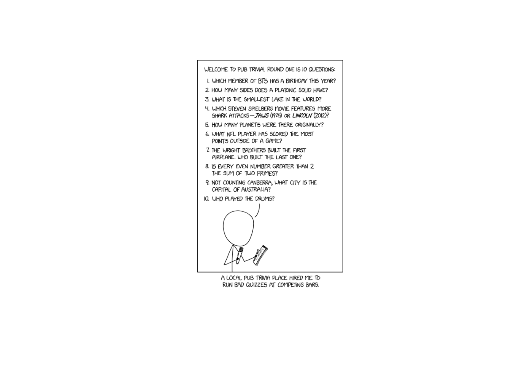
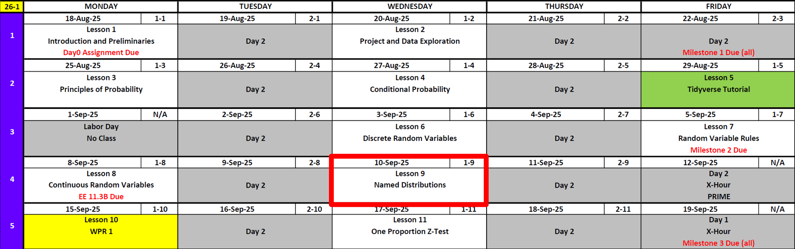
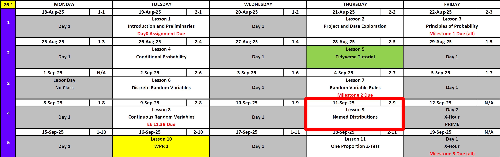
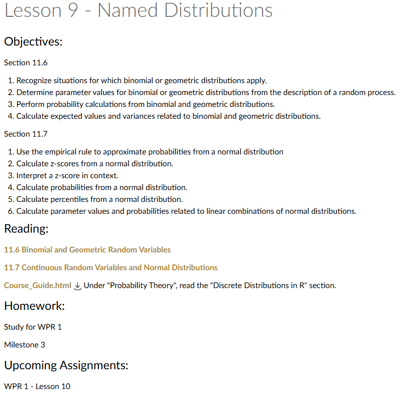
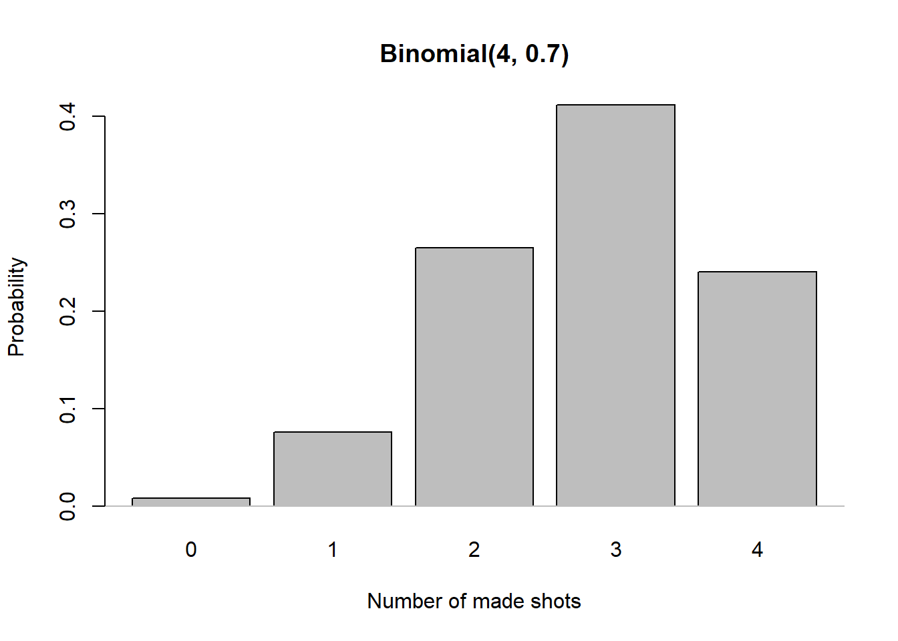
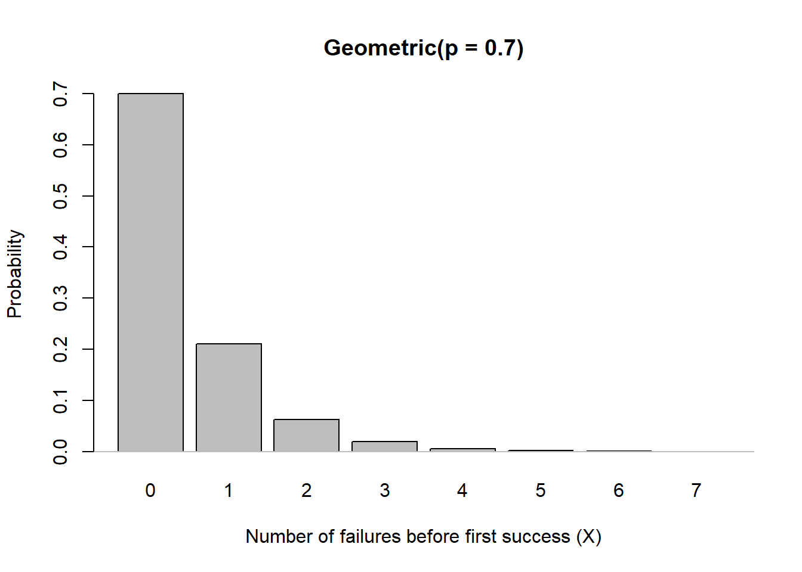
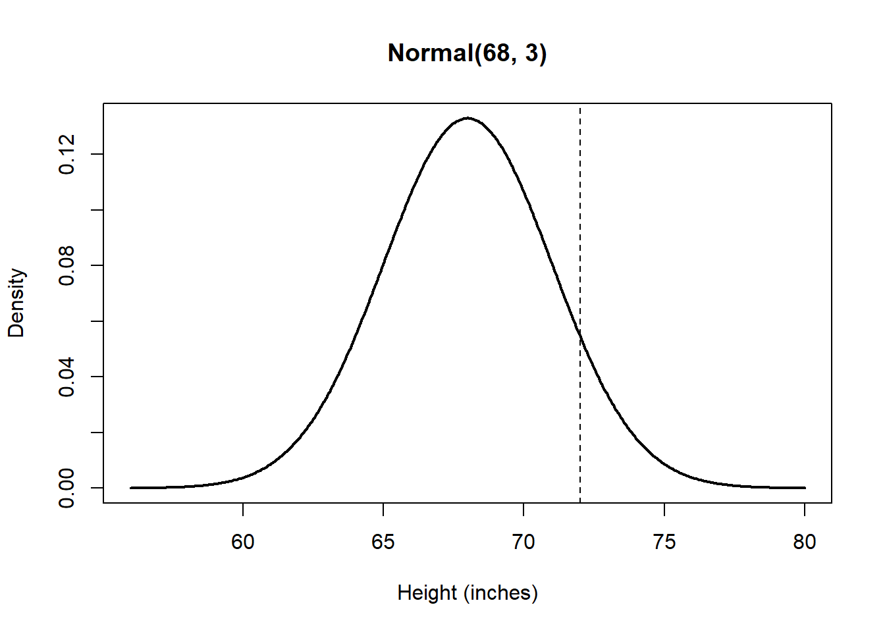
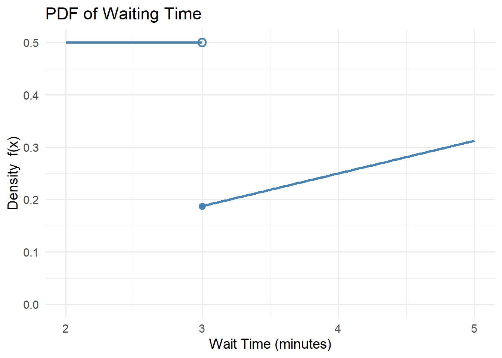
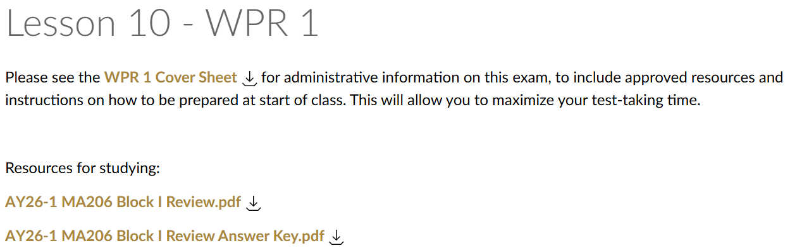

Lesson 9: Named Distributions
Calendar
Day 1

Day 2


Updates
Cal
Discrete Distribution Reminders
Probability Mass Function
\[ P(X=x) = \begin{cases} \dfrac{1}{6}, & x=1, \\[6pt] \dfrac{1}{6}, & x=2, \\[6pt] \dfrac{1}{6}, & x=3, \\[6pt] \dfrac{1}{6}, & x=4, \\[6pt] \dfrac{1}{6}, & x=5, \\[6pt] \dfrac{1}{6}, & x=6, \\[6pt] 0, & \text{otherwise}. \end{cases} \]
Cumulative Distribution Function
\[ F_X(x)=P(X\le x)= \begin{cases} 0, & x<1, \\[6pt] \dfrac{1}{6}, & 1\le x<2, \\[6pt] \dfrac{2}{6}, & 2\le x<3, \\[6pt] \dfrac{3}{6}, & 3\le x<4, \\[6pt] \dfrac{4}{6}, & 4\le x<5, \\[6pt] \dfrac{5}{6}, & 5\le x<6, \\[6pt] 1, & x\ge 6~. \end{cases} \]
\(P(X=2)\)
\[ P(X=2) = \dfrac{1}{6} \]
\(P(X \le 4)\)
\[ P(X \le 4) = P(X=1)+P(X=2)+P(X=3)+P(X=4) = \dfrac{1}{6}+\dfrac{1}{6}+\dfrac{1}{6}+\dfrac{1}{6} = \dfrac{4}{6} = \dfrac{2}{3} \] This is an unnamed distribution.
A named distribution is a probability distribution with a standard formula and notation that’s been given a name because it occurs so often in applications.
The Binomial Distribution
Suppose a basketball player makes a free throw with probability \(p=0.7\) (and misses with probability \(0.3\)).
If they shoot 4 times, what is the probability of exactly 2 made shots?
One sequence: Make, Make, Miss, Miss.
Probability \(= 0.7 \times 0.7 \times 0.3 \times 0.3\).But there are many possible sequences with 2 makes and 2 misses.
The number of such sequences is
\[ \binom{4}{2} = 6. \]
So
\[
P(\text{2 makes in 4 shots}) = \binom{4}{2}(0.7^2)(0.3^2).
\]
General Pattern → The Binomial Formula
If \(X\) is the number of successes in \(n\) independent trials, each with success probability \(p\), then
\[ P(X = x) = \binom{n}{x} p^x (1-p)^{n-x}, \quad x=0,1,\dots,n. \]
We write this as
\[
X \sim \text{Binomial}(n,p).
\]
Visualizing the Example

Expected Value, Variance, and Standard Deviation
For \(X \sim \mathrm{Binomial}(n,p)\):
- \(\mathbb{E}[X] = np\)
- \(\mathrm{Var}(X) = np(1-p)\)
- \(\mathrm{SD}(X) = \sqrt{np(1-p)}\)
For \(n=4\), \(p=0.7\):
- \(\mathbb{E}[X] = 4(0.7) = 2.8\)
- \(\mathrm{Var}(X) = 4(0.7)(0.3) = 0.84\)
- \(\mathrm{SD}(X) = \sqrt{0.84} \approx 0.917\)
\[ P(X = x) = \binom{n}{x} p^x (1-p)^{\,n-x}, \quad x=0,1,\dots,n. \]
Examples with \(n=4\), \(p=0.7\)
- \(P(X=2)\)
\[ \binom{4}{2}(0.7)^2(0.3)^2 \]
dbinom(2, size = 4, prob = .7)[1] 0.2646- \(P(X \le 2)\)
\[ \sum_{x=0}^{2} \binom{4}{x}(0.7)^x(0.3)^{4-x} \]
pbinom(2, size = 4, prob = .7)[1] 0.3483- \(P(X > 2)\) \[ 1 - P(X \le 2) \]
1 - pbinom(2, size = 4, prob = .7)[1] 0.6517The Geometric Distribution
Suppose a basketball player makes a free throw with probability \(p=0.7\) (and misses with probability \(0.3\)).
Let \(X\) be the number of failures before the first success. Then:
- \(X=0\): success on the first shot.
- \(X=2\): two misses, then a make on the 3rd shot.
For example, the probability of \(X=2\) is \[ P(X=2) = (1-p)^2\,p = (0.3)^2(0.7). \]
General Pattern → The Geometric Formula
If \(X\) is the number of failures before the first success in independent trials, then \[ P(X = x) = (1-p)^x\,p, \quad x=0,1,2,\dots \]
We write this as \[ X \sim \mathrm{Geometric}(p). \]
Visualizing the Example

Expected Value, Variance, and Standard Deviation
For \(X \sim \mathrm{Geometric}(p)\):
- \(\mathbb{E}[X] = \dfrac{1-p}{p}\)
- \(\mathrm{Var}(X) = \dfrac{1-p}{p^2}\)
- \(\mathrm{SD}(X) = \sqrt{\dfrac{1-p}{p^2}}\)
For \(p=0.7\):
- \(\mathbb{E}[X] = \dfrac{0.3}{0.7} \approx 0.429\)
- \(\mathrm{Var}(X) = \dfrac{0.3}{0.49} \approx 0.612\)
- \(\mathrm{SD}(X) = \sqrt{0.612} \approx 0.782\)
Practice Probabilities with \(p=0.7\)
- \(P(X=2)\) \[ (1-p)^2\,p \]
dgeom(2, prob = 0.7)[1] 0.063- \(P(X \le 2)\) \[ \sum_{x=0}^{2} (1-p)^x\,p \]
pgeom(2, prob = 0.7)[1] 0.973- \(P(X > 2)\) \[ 1 - P(X \le 2) = (1-p)^3 \]
1 - pgeom(2, prob = 0.7)[1] 0.027Continuous Distribution Reminder
Probability Density Function (PDF)
\[ f(x) = \begin{cases} 2(1-x), & 0 \le x \le 1, \\ 0, & \text{otherwise}. \end{cases} \]
Cumulative Distribution Function (CDF)
\[ F_X(x) = \begin{cases} 0, & x < 0, \\[6pt] 2x - x^2, & 0 \le x \le 1, \\[6pt] 1, & x > 1~. \end{cases} \]
Example Probabilities
\(P(X \le 0.5)\)
\[ F_X(0.5) = 2(0.5) - (0.5)^2 = 1 - 0.25 = 0.75 \]
\(P(0.25 \le X \le 0.75)\)
\[ F_X(0.75) - F_X(0.25) = (2(0.75) - 0.75^2) - (2(0.25) - 0.25^2) = 0.9375 - 0.4375 = 0.5 \]
The Normal Distribution
Suppose the heights of adult men in a population are approximately Normal with mean \(\mu = 68\) inches and standard deviation \(\sigma = 3\) inches.
What is the probability that a randomly chosen man is taller than 72 inches?
We compute this directly from the Normal distribution:
\[
P(X > 72) = \int_{72}^{\infty} \frac{1}{3\sqrt{2\pi}}
\exp\!\left(-\frac{(x-68)^2}{18}\right)\,dx.
\]
General Pattern → The Normal Formula
If \(X\) is a continuous random variable with mean \(\mu\) and variance \(\sigma^2\), then
\[ f(x) = \frac{1}{\sigma \sqrt{2\pi}} \exp\!\left(-\frac{(x-\mu)^2}{2\sigma^2}\right), \quad -\infty < x < \infty. \]
We write this as
\[
X \sim \text{Normal}(\mu,\sigma^2).
\]
Visualizing the Example

Expected Value, Variance, and Standard Deviation
For \(X \sim \mathrm{Normal}(\mu,\sigma^2)\):
- \(\mathbb{E}[X] = \mu\)
- \(\mathrm{Var}(X) = \sigma^2\)
- \(\mathrm{SD}(X) = \sigma\)
For \(\mu=68\), \(\sigma=3\):
- \(\mathbb{E}[X] = 68\)
- \(\mathrm{Var}(X) = 9\)
- \(\mathrm{SD}(X) = 3\)
Practice Probabilities with \(\mu=68\), \(\sigma=3\)
- \(P(X=70)\)
\[ P(X=70) = 0 \quad \text{(point probability in a continuous distribution is zero)} \]
- \(P(X \le 70)\)
\[ P(X \le 70) = \int_{-\infty}^{70} \frac{1}{3\sqrt{2\pi}} \exp\!\left(-\frac{(x-68)^2}{18}\right)\,dx \]
pnorm(70, mean = 68, sd = 3)[1] 0.7475075- \(P(X > 72)\)
\[ P(X > 72) = \int_{72}^{\infty} \frac{1}{3\sqrt{2\pi}} \exp\!\left(-\frac{(x-68)^2}{18}\right)\,dx \]
1 - pnorm(72, mean = 68, sd = 3)[1] 0.09121122- \(P(65 \le X \le 70)\)
\[ P(65 \le X \le 70) = \int_{65}^{70} \frac{1}{3\sqrt{2\pi}} \exp\!\left(-\frac{(x-68)^2}{18}\right)\,dx \]
pnorm(70, mean = 68, sd = 3) - pnorm(65, mean = 68, sd = 3)[1] 0.5888522Practice Problems
Practice 1
A soldier hits a target with probability \(p=0.6\) on each shot, independently of other shots. Suppose they fire \(n=5\) times. Let \(X\) be the number of hits.
- Write the distribution of \(X\).
- Find \(\mathbb{E}[X]\), \(\mathrm{Var}(X)\), and \(\mathrm{SD}(X)\).
- Compute:
- \(P(X=3)\)
- \(P(X \le 2)\)
- \(P(X < 2)\)
- \(P(X > 4)\)
- \(P(X \ge 4)\)
- \(P(X=3)\)
Answer
\(X \sim \mathrm{Binomial}(n=5, p=0.6)\)
\(\mathbb{E}[X] = np = 5(0.6) = 3\)
\(\mathrm{Var}(X) = np(1-p) = 5(0.6)(0.4) = 1.2\)
\(\mathrm{SD}(X) = \sqrt{1.2} \approx 1.095\)Probabilities:
dbinom(3, size=5, prob=0.6) # P(X=3)[1] 0.3456pbinom(2, size=5, prob=0.6) # P(X ≤ 2)[1] 0.31744pbinom(1, size=5, prob=0.6) # P(X ≤ 2)[1] 0.087041 - pbinom(4, size=5, prob=0.6) # P(X > 4)[1] 0.077761 - pbinom(3, size=5, prob=0.6) # P(X > 4)[1] 0.33696Practice 2
A cadet passes a marksmanship test with probability \(p=0.4\) on each attempt, independently of other attempts. Let \(Y\) be the number of failures before the first pass.
- Write the distribution of \(Y\).
- Find \(\mathbb{E}[Y]\), \(\mathrm{Var}(Y)\), and \(\mathrm{SD}(Y)\).
- Compute:
- \(P(Y=2)\)
- \(P(Y \le 3)\)
- \(P(Y > 4)\)
- \(P(Y=2)\)
Answer
\(Y \sim \mathrm{Geometric}(p=0.4)\), where \(Y =\) failures before first success
\(\mathbb{E}[Y] = \dfrac{1-p}{p} = \dfrac{0.6}{0.4} = 1.5\)
\(\mathrm{Var}(Y) = \dfrac{1-p}{p^2} = \dfrac{0.6}{0.16} = 3.75\)
\(\mathrm{SD}(Y) = \sqrt{3.75} \approx 1.936\)Probabilities:
dgeom(2, prob=0.4) # P(Y=2)[1] 0.144pgeom(3, prob=0.4) # P(Y ≤ 3)[1] 0.87041 - pgeom(4, prob=0.4) # P(Y > 4)[1] 0.07776Practice 3
Suppose the times (in minutes) to complete a training run are approximately Normal with mean \(\mu=50\) and standard deviation \(\sigma=8.\) Let \(Z\) be the time for a randomly chosen runner.
- Write the distribution of \(Z\).
- Find \(\mathbb{E}[Z]\), \(\mathrm{Var}(Z)\), and \(\mathrm{SD}(Z)\).
- Compute:
- \(P(Z \le 45)\)
- \(P(Z > 60)\)
- \(P(40 \le Z \le 55)\)
- \(P(Z \le 45)\)
Answer
\(Z \sim \mathrm{Normal}(\mu=50, \sigma^2=64)\)
\(\mathbb{E}[Z] = \mu = 50\)
\(\mathrm{Var}(Z) = \sigma^2 = 64\)
\(\mathrm{SD}(Z) = \sigma = 8\)Probabilities:
pnorm(45, mean=50, sd=8) # P(Z ≤ 45)[1] 0.26598551 - pnorm(60, mean=50, sd=8) # P(Z > 60)[1] 0.1056498pnorm(55, mean=50, sd=8) - pnorm(40, mean=50, sd=8) # P(40 ≤ Z ≤ 55)[1] 0.6283647Problem 4
Let the random variable \(X\) denote the time (in minutes) a patient waits at a doctor’s office before being called.
\[ f_X(x)= \begin{cases} \dfrac{1}{2}, & 2 \le x < 3, \\[6pt] \dfrac{x}{16}, & 3 \le x \le 5, \\[6pt] 0, & \text{otherwise}. \end{cases} \]
- Is \(X\) a discrete or continuous random variable? Sketch the PDF and label the axes.
- Find the cumulative distribution function (CDF), \(F_X(x)\), in curly-brace notation.
- Compute \(P(X \le 2.6)\).
- Compute \(P(2.5 \le X \le 4)\).
- Verify that this is a valid probability distribution.
Answer
- Verify Valid PDF \[ \int_{2}^{3}\frac{1}{2}\,dx + \int_{3}^{5}\frac{x}{16}\,dx = \frac{1}{2} + \frac{1}{16}\cdot \frac{25-9}{2} = \frac{1}{2} + \frac{16}{32} = \frac{1}{2} + \frac{1}{2} = 1~. \]
- \(X\) is continuous. The PDF is flat at height \(1/2\) on \([2,3)\), then jumps down to \(f(3)=3/16\) and increases linearly to \(f(5)=5/16\).

- From PDF to CDF
We want the cumulative distribution function (CDF):
\[ F_X(x) = P(X \leq x) = \int_{-\infty}^{x} f_X(t)\,dt \]
where the PDF is
\[ f_X(t) = \begin{cases} \dfrac{1}{2}, & 2 \le t < 3, \\[6pt] \dfrac{t}{16}, & 3 \le t \le 5, \\[6pt] 0, & \text{otherwise}. \end{cases} \]
Case 1: \(x < 2\)
No probability has accumulated yet:
\[ F_X(x) = 0. \]
Case 2: \(2 \le x < 3\)
We integrate from 2 up to \(x\):
\[ F_X(x) = \int_{2}^{x} \frac{1}{2}\,dt = \left[\frac{t}{2}\right]_{t=2}^{t=x} = \frac{x}{2} - \frac{2}{2} = \frac{x}{2} - 1. \]
Case 3: \(3 \le x \le 5\)
We add all mass up to 3 plus the integral from 3 to \(x\):
\[ F_X(x) = \int_{2}^{3} \frac{1}{2}\,dt \;+\; \int_{3}^{x} \frac{t}{16}\,dt. \]
First part:
\[ \int_{2}^{3} \frac{1}{2}\,dt = \left[\frac{t}{2}\right]_{2}^{3} = \frac{3}{2} - \frac{2}{2} = 0.5. \]
Second part (leaving the constant inside):
\[ \int_{3}^{x} \frac{t}{16}\,dt = \left[\frac{t^2}{32}\right]_{t=3}^{t=x} = \frac{x^2}{32} - \frac{9}{32} = \frac{x^2 - 9}{32}. \]
So together:
\[ F_X(x) = 0.5 + \frac{x^2 - 9}{32} = \frac{16}{32} + \frac{x^2 - 9}{32} = \frac{x^2 + 7}{32}. \]
Case 4: \(x > 5\)
All probability mass is included:
\[ F_X(x) = 1. \]
Final CDF
\[ F_X(x) = \begin{cases} 0, & x < 2, \\[6pt] \dfrac{x}{2} - 1, & 2 \le x < 3, \\[6pt] \dfrac{x^2 + 7}{32}, & 3 \le x \le 5, \\[6pt] 1, & x > 5~. \end{cases} \]
- Since \(2.6 \in [2,3)\), \[ P(X \le 2.6)=F_X(2.6)=\frac{2.6-2}{2}=0.3. \]
- Split at \(3\): \[ \begin{aligned} P(2.5 \le X \le 4) &= \int_{2.5}^{3} \frac{1}{2}\,dx + \int_{3}^{4} \frac{x}{16}\,dx \\[6pt] &= \frac{1}{2}(0.5) + \frac{1}{16}\cdot \frac{4^2-3^2}{2} \\[6pt] &= 0.25 + \frac{1}{16}\cdot \frac{16-9}{2} = 0.25 + \frac{1}{16}\cdot \frac{7}{2} = 0.25 + \frac{7}{32} = \frac{8}{32} + \frac{7}{32} = \frac{15}{32} \approx 0.46875~. \end{aligned} \]
Lesson 10

Resources:
- Computer with blank script in RStudio
- Course Guide
- Tidyverse Tutorial
- One Page (Front and Back) of personally handwritten notes
- Issued Calculator
Outline
Probability Rules
- Venn Diagrams
- Definitions of Union/Intersection
- Addition Rule
- Complement Rule
- Conditional Probability
- Multiplication Rule
- Law of Total Probability
- Bayes’ Theorem
- Tree Diagrams
- Rules of Independence and Mutually Exclusive Events
- Take Scenarios and Answer Questions Related to Probability
Distributions
- Identify appropriate distribution (named or unnamed)
- Go from PDF to CDF for unnamed distributions
- Find probabilities
- Find expected values
- Find variances
- Linear Transformation Rules (Adding/Subtracting Expected Values and Variances)
Before you leave
Today:
- Any questions for me?
Upcoming Graded Events
- WPR 1: Lesson 10
- Project Milestone 3: Due Canvas Lesson 7